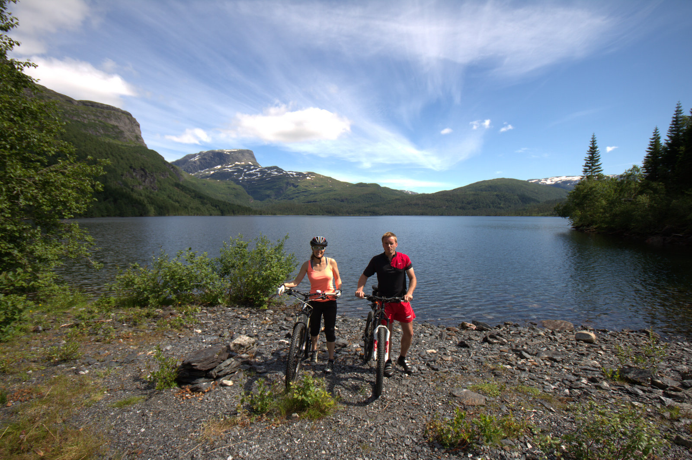

Sykkel: Hardanger rundt

Endeleg skein sola litt på sommarbleike kroppar, samt at det verste av tørrhoste, feber og generelt elende hadde gått hen og godtatt litt god gammal sykling og nyting av flott Hardanger-natur.
Dersom du berre er interessert i bileta ser du dei i Google+ albumet.
Turen begynte i Granvin, nærare bestemt Espelandsdalen ved Espelandsvatnet. Deretter gjekk ruta vidare mot Solsævatnet der du har flott utsikt til Vassfjøra. Det er flott grusveg inn til stølane med vatnet der, for dei som ikkje punkterte. Etter litt pausing i graset der sykla me traktorvegen over til Ljono, med mange flotte gardar som ligg og kikar ned på bygda Ulvik. Ned mot Ulvik blir det litt asfalt igjen, før me kom ned på Den Grønne Kafe for å nyta mat og drykk på kaien.
Etter litt lufting av beina gjekk turen oppover til Bergo, for at me så tok fatt på dei siste oppoverbakkane mot den gamle postvegen over til Granvin. Her passerer me mellom anna stølen med det herlege navnet Skjitnaset. Frå toppunktet går det endeleg nedover på råflotte stiar mot Vatnaset, Haugseåsen og Hausnes.
Deler av ruta kan du sjå på Endomondo (GPS gjekk tom for batteri, så siste rest er ikkje med).